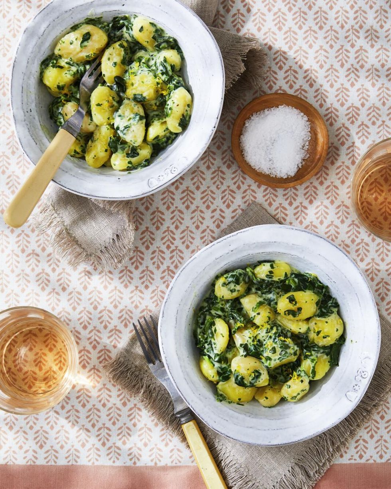

Gnocchi with Creamed Spinach

Ingredients
- Kosher salt and freshly ground black pepper
- 1(19-ounce) package frozen cream of spinach, defrosted
- 1/2 c.heavy cream
- 2 oz.Parmesan, grated (about 1/2 cup)
- 1/8 tsp.freshly grated nutmeg
- Lemon zest, for garnish
Directions
- Step 1
In a large pot of salted water, cook gnocchi according to package directions.
Step 2
Meanwhile, cook cream of spinach and cream in a large, nonstick skillet over medium heat until warm and thickened, 3 to 4 minutes. Season with salt and pepper.
Add Parmesan, nutmeg, and gnocchi, and stir to coat. Serve garnished with lemon zest.
Return